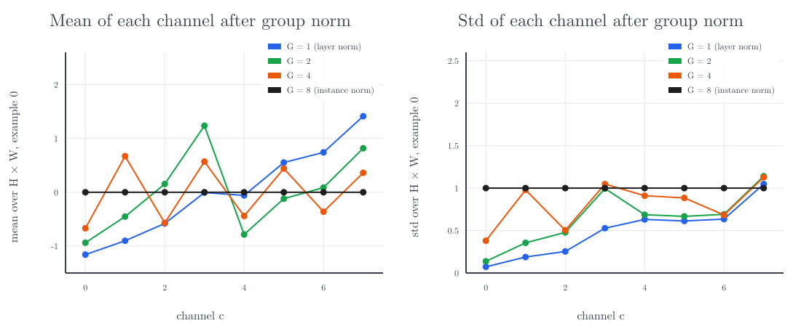
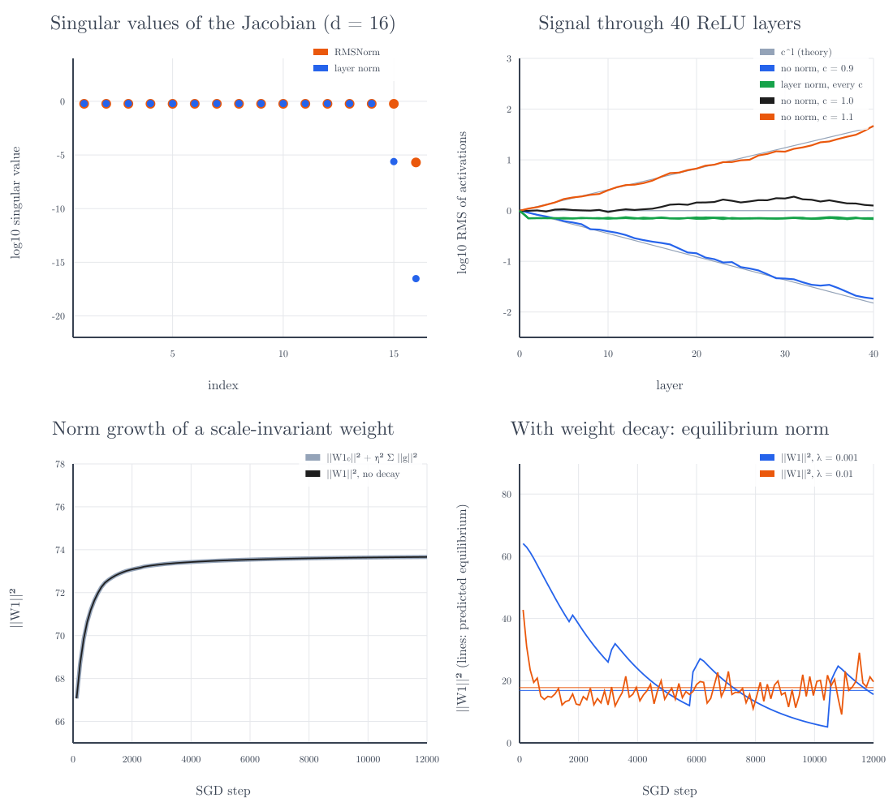
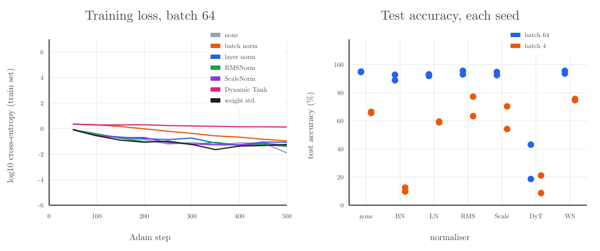

Normalisation Layers: Axes, Invariances and Effective Learning Rates
Abstract
Layer norm, RMSNorm, group norm, instance norm and batch norm all standardise activations. They differ only in the axes the mean and variance are taken over, and in whether they centre. This report checks each against a hand loop to \(10^{-15}\), shows that only batch norm couples the examples of a batch, and measures the invariances to shifts and scalings, including where the \(\epsilon\) in the denominator breaks them. It derives the Jacobians in closed form and matches them to automatic differentiation. Layer norm's Jacobian has one exactly zero singular value and one equal to \(\epsilon/\sigma^3\). As a result the gradient entering a normaliser sums to zero, and a weight matrix feeding one receives gradients orthogonal to itself. Under plain SGD its squared norm then grows by exactly \(\eta^2\lVert g\rVert^2\) per step, which holds on a digits classifier to a relative \(1.7\times10^{-11}\). With weight decay the norm settles near a predicted equilibrium, or keeps collapsing and jumping back up with a spike in the loss. Through 40 random ReLU layers the activations follow \(c^l\) without normalisation and stay near \(\sqrt{1/2}\) with it. On a 16-layer MLP for digits, normalisation hardly matters at batch size 64. At batch size 4, batch norm stops learning altogether, and Dynamic Tanh fails at both sizes because the signal vanishes before training starts.
The problem
A deep network trains well only if the scale of its activations stays controlled from layer to layer. Normalisation layers do this directly: they subtract a mean and divide by a standard deviation computed from the activations themselves, then apply a learned gain \(\gamma\) and bias \(\beta\). Batch norm (Ioffe and Szegedy, 2015) takes the statistics over the batch. Layer norm (Ba, Kiros and Hinton, 2016) takes them over the features of each example, instance norm (Ulyanov, Vedaldi and Lempitsky, 2016) over the positions of each channel, and group norm (Wu and He, 2018) over the positions and a group of channels. RMSNorm (Zhang and Sennrich, 2019) drops the centring. Three questions are worth answering exactly. What do these layers compute? What do they do to gradients? And when do they help?
This report replaces the original example examples/nn/0_foundations/0.2_reusable_layer_library/normalization_layers.cpp. That example checked layer norm, RMSNorm and group norm against hand computations, showed batch independence, checked the group-norm limits and tabulated the invariances. All of that is kept. Added here are the Jacobians and their
consequences for training, signal propagation and a comparison on real data. The new functions are in datamunge/nn/normalization_variants.hpp.
The method
One operation over different axes
For a tensor \(x\) and a set of axes \(A\), let \(\mu_A\) and \(\sigma^2_A\) be the mean and biased variance over \(A\), separately for every index of the other axes. The normalisers compute
with \(A\) equal to the feature axis for layer norm, the spatial axes for instance norm, the spatial axes plus a group of \(C/G\) channels for group norm, and the batch axis (plus the spatial axes) for batch norm. RMSNorm divides by \(\sqrt{\overline{x^2}+\epsilon}\) without subtracting the mean. Group norm with \(G=1\) is layer norm over the whole image, and with \(G=C\) it is instance norm.
nn::normalize(x, axes, center, eps) performs this operation without parameters. Only batch norm puts the batch axis in \(A\), so it is the only one whose output for one example depends on the others.
Two cheaper relatives are included. ScaleNorm (Nguyen and Salazar, 2019) uses one scalar gain, \(y=g\,x/\sqrt{\lVert x\rVert^2+\epsilon}\), and equals RMSNorm when \(g=\sqrt d\). Dynamic Tanh (Zhu et al., 2025) drops the statistics altogether and computes \(y=\gamma\odot\tanh(\alpha x)+\beta\) with a learned scalar \(\alpha\). It was proposed as a replacement for layer norm in Transformers. Weight standardisation (Qiao et al., 2019) normalises the weights instead of the activations: each output unit's incoming weights get mean 0 and variance 1.
Invariances
Ignoring \(\epsilon\), \(\mathrm{LN}(ax+c)=\operatorname{sign}(a)\,\mathrm{LN}(x)\) for any shift \(c\) and any \(a\ne0\), and \(\mathrm{RMS}(ax)=\operatorname{sign}(a)\,\mathrm{RMS}(x)\). With \(\epsilon\), scaling replaces \(\sigma^2\) by \(a^2\sigma^2\) but leaves \(\epsilon\) alone, so invariance holds only while \(a^2\sigma^2\gg\epsilon\). Inputs with variance near \(\epsilon\) are shrunk towards zero rather than blown up.
Jacobians and gradient orthogonality
For a vector \(x\in\mathbb R^d\) with \(\sigma=\sqrt{\mathrm{var}(x)+\epsilon}\) and \(\hat y=(x-\bar x)/\sigma\), differentiate \(\hat y_i=(x_i-\bar x)/\sigma\) using \(\partial\bar x/\partial x_j=1/d\) and \(\partial\sigma/\partial x_j=(x_j-\bar x)/(d\sigma)\):
where for RMSNorm \(r=\sqrt{\overline{x^2}+\epsilon}\) and \(\hat y=x/r\) (nn::layer_norm_jacobian, nn::rms_norm_jacobian). Both are symmetric. \(J_{\mathrm{LN}}\mathbf 1=0\) exactly. Since \(\lVert\hat y\rVert^2=d\,\mathrm{var}/(\mathrm{var}+\epsilon)\), the centred input is an eigenvector with eigenvalue \(\epsilon/\sigma^3\), and the remaining \(d-2\) eigenvalues equal \(1/\sigma\). Likewise \(J_{\mathrm{RMS}}\) has eigenvalue \(\epsilon/r^3\) along \(x\) and \(1/r\) elsewhere.
Because \(J\) is symmetric, the gradient passed back, \(J\,\partial L/\partial y\), lies in the range of \(J\). It sums to zero over the features and is orthogonal to the centred input up to order \(\epsilon\).
The same structure acts on weights. If a weight matrix \(W\) feeds a normaliser with \(\epsilon=0\), then \(L(cW)=L(W)\) for every \(c>0\). Differentiating in \(c\) at \(c=1\) gives \(\langle\nabla L(W),W\rangle=0\), and differentiating \(L(cW)=L(W)\) in \(W\) gives \(\nabla L(cW)=\nabla L(W)/c\).
Norm growth and effective learning rate
A plain SGD step \(W'=W-\eta g\) with \(g\perp W\) gives, by Pythagoras,
The norm can only grow. Since only the direction \(W/\lVert W\rVert\) matters and the gradient scales as \(1/\lVert W\rVert\), the step taken by the direction is \(\eta/\lVert W\rVert^2\) times the gradient at unit norm. Growth therefore lowers the effective learning rate automatically (van Laarhoven, 2017; Arora, Li and Lyu, 2019). Weight decay, \(W'=(1-\eta\lambda)W-\eta g\), pulls the other way. Writing \(\tilde g=g\lVert W\rVert\) for the gradient at unit norm, a fixed point of \(\lVert W\rVert^2\) on average satisfies
Signal propagation
Take ReLU layers \(h_l=\mathrm{relu}(h_{l-1}W_l)\) of width \(n\) with weights \(\mathcal N(0,2c^2/n)\), which is He initialisation (He et al., 2015) times a gain \(c\). Given \(h_{l-1}\), each pre-activation is centred Gaussian with variance \(2c^2\,\overline{h_{l-1}^2}\), and ReLU keeps half of the second moment of a symmetric variable. So \(\mathbb E\,\overline{h_l^2}=c^2\,\overline{h_{l-1}^2}\) and the RMS changes by a factor \(c\) per layer. Over 40 layers, \(c=1.1\) gives \(45\) and \(c=0.9\) gives \(0.015\). With layer norm before each ReLU, every row of pre-activations has mean 0 and variance 1, and the RMS after ReLU is close to \(\sqrt{1/2}\) whatever \(c\) is. Dynamic Tanh does not have this property. For small inputs \(\tanh(\alpha x)\approx\alpha x\), so at initialisation with \(\alpha=0.5\) each layer scales the RMS by about \(\alpha\).
Simple examples
Hand checks, batch independence, groups and invariances
The program normalises \(x\in\mathbb R^{3\times6}\) (entries \(\mathcal N(2,3^2)\)) with layer norm and RMSNorm and compares the results with a loop over rows. It replaces one row and watches another, applies group norm with \(G=1,2,4,8\) to images \([2,4,4,8]\) whose channel \(c\) has offset \(3c\) and scale \(1+c\), and applies \(x\mapsto ax+c\) to a \([4,16]\) input for each normaliser (\(\epsilon=10^{-5}\)).
#include <dm/dm.hpp>
namespace nn = dm::nn;
using nn::Tensor;
using dm::graphics::RGB;
const auto F64 = nn::DType::Float64;
double max_diff(const Tensor& a, const Tensor& b) { return nn::max(nn::abs(a - b)).item(); }
int main() {
std::filesystem::create_directories("build");
const double eps = 1e-5;
// 1. Layer norm and RMSNorm of x [3, 6] against a hand loop over each row.
nn::ParameterStore p(1, F64);
nn::Generator gen(1);
const Tensor x = nn::normal({3, 6}, 2.0, 3.0, gen, F64);
const Tensor y_ln = nn::layer_norm(p, "ln", x, eps), y_rms = nn::rms_norm(p, "rms", x, eps);
double e_ln = 0, e_rms = 0;
for (std::int64_t i = 0; i < 3; ++i) {
double m = 0, ms = 0, v = 0;
for (std::int64_t j = 0; j < 6; ++j) m += x.at({i, j}) / 6, ms += x.at({i, j}) * x.at({i, j}) / 6;
for (std::int64_t j = 0; j < 6; ++j) v += (x.at({i, j}) - m) * (x.at({i, j}) - m) / 6;
for (std::int64_t j = 0; j < 6; ++j) {
e_ln = std::max(e_ln, std::abs(y_ln.at({i, j}) - (x.at({i, j}) - m) / std::sqrt(v + eps)));
e_rms = std::max(e_rms, std::abs(y_rms.at({i, j}) - x.at({i, j}) / std::sqrt(ms + eps)));
}
}
std::print("x [3, 6]: max |layer_norm − hand| = {:.1e}, max |rms_norm − hand| = {:.1e}; normalize(x, {{-1}}) vs layer_norm: {:.1e}.\n\n", e_ln, e_rms,
max_diff(nn::normalize(x, {-1}), y_ln));
std::print("| row 0 | 1 | 2 | 3 | 4 | 5 | 6 |\n| :--- | ---: | ---: | ---: | ---: | ---: | ---: |\n");
for (const auto& [label, t] : std::vector<std::pair<std::string, Tensor>>{{"x", x}, {"layer norm", y_ln}, {"RMSNorm", y_rms}}) {
std::print("| {} |", label);
for (std::int64_t j = 0; j < 6; ++j) std::print(" {:.3f} |", t.at({0, j}));
std::print("\n");
}
// The same normalization applies separately at every sequence position.
nn::Generator sequence_gen(9);
const Tensor sequence = nn::normal({2, 4, 6}, 0.0, 1.0, sequence_gen, F64);
const Tensor sequence_ln = nn::layer_norm(p, "ln", sequence, eps);
const Tensor flat_ln = nn::layer_norm(p, "ln", nn::reshape(sequence, {8, 6}), eps);
const double sequence_error = max_diff(sequence_ln, nn::reshape(flat_ln, {2, 4, 6}));
if (sequence_ln.shape() != sequence.shape() || !(sequence_error < 1e-12))
throw std::runtime_error("Layer norm must preserve shape and normalize each position separately");
std::print("\nLayer norm on [2, 4, 6] matches normalization of the eight rows to {:.1e}.\n", sequence_error);
// 2. Batch independence: replace row 1 and compare row 0, for layer norm and for batch norm in training mode.
std::vector<double> xv = x.to_vector<double>();
for (std::int64_t j = 0; j < 6; ++j) xv[6 + j] = 100.0 * (j - 2);
const Tensor xw = nn::from_vector(xv, {3, 6});
nn::ParameterStore bp(1, F64), bs(2, F64);
const Tensor b0 = nn::batch_norm(bp, bs, "bn", x, true), b1 = nn::batch_norm(bp, bs, "bn", xw, true);
const Tensor l1 = nn::layer_norm(p, "ln", xw, eps);
std::print("\nReplacing row 1 changes row 0's output by {:.1e} under layer norm and by {:.3f} under batch norm (training mode).\n",
max_diff(nn::slice(y_ln, {0, 0}, {1, 6}), nn::slice(l1, {0, 0}, {1, 6})), max_diff(nn::slice(b0, {0, 0}, {1, 6}), nn::slice(b1, {0, 0}, {1, 6})));
const Tensor xc = x - nn::mean(x, {1}, true);
std::print("On rows with mean zero, RMSNorm and layer norm agree to {:.1e}.\n", max_diff(nn::layer_norm(p, "ln", xc, eps), nn::rms_norm(p, "rms", xc, eps)));
// 3. Group norm of an image batch [2, 4, 4, 8] whose channel c has offset 3c and scale 1 + c.
nn::Generator g2(2);
const Tensor z = nn::normal({2, 4, 4, 8}, 0.0, 1.0, g2, F64);
const Tensor cidx = nn::arange(0, 8, 1, F64);
const Tensor img = z * (cidx + 1.0) + cidx * 3.0;
std::print("\n| groups G | channels per group | statistics per example | max abs. difference from a hand computation |\n| ---: | ---: | ---: | ---: |\n");
const std::vector<std::int64_t> groups{1, 2, 4, 8};
std::vector<Tensor> out;
for (std::int64_t G : groups) {
out.push_back(nn::group_norm(p, std::format("gn{}", G), img, G, eps));
// Hand: loop over (example, group) and standardise its H × W × C/G entries.
const std::int64_t per = 8 / G;
double err = 0;
for (std::int64_t n = 0; n < 2; ++n)
for (std::int64_t g = 0; g < G; ++g) {
double m = 0, v = 0, cnt = 16.0 * per;
for (std::int64_t h = 0; h < 4; ++h)
for (std::int64_t w = 0; w < 4; ++w)
for (std::int64_t c = g * per; c < (g + 1) * per; ++c) m += img.at({n, h, w, c}) / cnt;
for (std::int64_t h = 0; h < 4; ++h)
for (std::int64_t w = 0; w < 4; ++w)
for (std::int64_t c = g * per; c < (g + 1) * per; ++c) v += std::pow(img.at({n, h, w, c}) - m, 2) / cnt;
for (std::int64_t h = 0; h < 4; ++h)
for (std::int64_t w = 0; w < 4; ++w)
for (std::int64_t c = g * per; c < (g + 1) * per; ++c)
err = std::max(err, std::abs(out.back().at({n, h, w, c}) - (img.at({n, h, w, c}) - m) / std::sqrt(v + eps)));
}
std::print("| {} | {} | {} | {:.1e} |\n", G, per, G, err);
}
std::print("\ninstance_norm vs group_norm with G = 8: {:.1e}; group_norm with G = 1 vs normalize over (H, W, C): {:.1e}.\n",
max_diff(nn::instance_norm(p, "in", img, eps), out[3]), max_diff(nn::normalize(img, {1, 2, 3}), out[0]));
// Per-channel mean and standard deviation of example 0, before and after.
std::vector<std::vector<double>> cm(5), cs(5);
for (std::size_t k = 0; k < 5; ++k) {
const Tensor t = k == 0 ? img : out[k - 1];
for (std::int64_t c = 0; c < 8; ++c) {
double m = 0, v = 0;
for (std::int64_t h = 0; h < 4; ++h)
for (std::int64_t w = 0; w < 4; ++w) m += t.at({0, h, w, c}) / 16;
for (std::int64_t h = 0; h < 4; ++h)
for (std::int64_t w = 0; w < 4; ++w) v += std::pow(t.at({0, h, w, c}) - m, 2) / 16;
cm[k].push_back(m), cs[k].push_back(std::sqrt(v));
}
}
std::print("Example 0, per-channel mean after G = 1: ");
for (double v : cm[1]) std::print("{:.2f} ", v);
std::print("\nExample 0, per-channel mean after G = 8: ");
for (double v : cm[4]) std::print("{:.1e} ", v);
std::print("\nExample 0, per-channel std after G = 1: ");
for (double v : cs[1]) std::print("{:.2f} ", v);
std::print("\nExample 0, per-channel std after G = 2: ");
for (double v : cs[2]) std::print("{:.2f} ", v);
std::print("\n");
// 4. Invariances of each normaliser to x -> a x + c on a [4, 16] input.
nn::Generator g3(3);
const Tensor u = nn::normal({4, 16}, 0.5, 2.0, g3, F64);
nn::ParameterStore q(1, F64);
const std::vector<std::pair<std::string, std::function<Tensor(const Tensor&)>>> norms{
{"layer norm", [&](const Tensor& t) { return nn::layer_norm(q, "ln", t, eps); }},
{"RMSNorm", [&](const Tensor& t) { return nn::rms_norm(q, "rms", t, eps); }},
{"ScaleNorm", [&](const Tensor& t) { return nn::scale_norm(q, "sn", t, eps); }},
{"Dynamic Tanh", [&](const Tensor& t) { return nn::dynamic_tanh(q, "dyt", t); }}};
const std::vector<std::tuple<std::string, double, double>> maps{{"x + 5", 1, 5}, {"3x", 3, 0}, {"−2x", -2, 0}, {"3x + 5", 3, 5}, {"0.001x", 0.001, 0}};
std::print("\n| max abs. change of the output under | layer norm | RMSNorm | ScaleNorm | Dynamic Tanh |\n| :--- | ---: | ---: | ---: | ---: |\n");
for (const auto& [label, a, c] : maps) {
std::print("| x → {} |", label);
for (const auto& [name, f] : norms) std::print(" {:.1e} |", max_diff(f(u * a + c), f(u)));
std::print("\n");
}
// Figure: per-channel mean and standard deviation of example 0 before and after group norm.
auto fig = dm::graphics::RLayout::create(1, 2);
const std::vector<std::string> labels{"input", "G = 1 (layer norm)", "G = 2", "G = 4", "G = 8 (instance norm)"};
const std::vector<RGB> cols{{148, 163, 184}, {37, 99, 235}, {22, 163, 74}, {234, 88, 12}, {30, 30, 30}};
std::vector<double> ch(8);
std::iota(ch.begin(), ch.end(), 0.0);
for (int panel = 0; panel < 2; ++panel) {
auto pl = dm::graphics::RPlot::create();
const auto& data = panel == 0 ? cm : cs;
for (std::size_t k = 1; k < 5; ++k) pl.lines(ch, data[k], labels[k], cols[k], 2.0).points(ch, data[k], "", cols[k], 4.5);
pl.x_limits(-0.5, 7.5).x_label("channel c").title(panel == 0 ? "Mean of each channel after group norm" : "Std of each channel after group norm");
if (panel == 0) pl.y_limits(-1.5, 2.6).y_label("mean over H × W, example 0");
else pl.y_limits(0, 2.6).y_label("std over H × W, example 0");
fig.add(pl);
}
fig.size(1100, 460).fit_panels();
fig.save("build/normalization_groups.svg");
}x [3, 6]: max layer_norm − hand = 4.4e-16, max rms_norm − hand = 1.1e-16; normalize(x, {-1}) vs layer_norm: 0.0e+00.
| row 0 | 1 | 2 | 3 | 4 | 5 | 6 |
|---|---|---|---|---|---|---|
| x | -0.498 | 1.677 | -0.452 | 3.994 | 3.580 | 3.999 |
| layer norm | -1.307 | -0.191 | -1.283 | 0.997 | 0.784 | 1.000 |
| RMSNorm | -0.176 | 0.593 | -0.160 | 1.412 | 1.265 | 1.414 |
Layer norm on [2, 4, 6] matches normalization of the eight rows to 0.0e+00.
Replacing row 1 changes row 0's output by 0.0e+00 under layer norm and by 2.058 under batch norm (training mode). On rows with mean zero, RMSNorm and layer norm agree to 1.1e-16.
| groups G | channels per group | statistics per example | max abs. difference from a hand computation |
|---|---|---|---|
| 1 | 8 | 1 | 1.1e-15 |
| 2 | 4 | 2 | 8.9e-16 |
| 4 | 2 | 4 | 1.1e-15 |
| 8 | 1 | 8 | 8.9e-16 |
instance_norm vs group_norm with G = 8: 0.0e+00; group_norm with G = 1 vs normalize over (H, W, C): 0.0e+00. Example 0, per-channel mean after G = 1: -1.16 -0.90 -0.58 -0.01 -0.06 0.55 0.74 1.41 Example 0, per-channel mean after G = 8: -4.2e-17 -3.6e-16 -9.0e-17 -2.8e-16 -6.9e-17 2.6e-16 -5.6e-17 2.4e-16 Example 0, per-channel std after G = 1: 0.07 0.19 0.25 0.53 0.63 0.61 0.63 1.05 Example 0, per-channel std after G = 2: 0.14 0.36 0.48 1.00 0.69 0.67 0.69 1.14
| max abs. change of the output under | layer norm | RMSNorm | ScaleNorm | Dynamic Tanh |
|---|---|---|---|---|
| x → x + 5 | 8.9e-16 | 2.4e+00 | 2.4e+00 | 1.7e+00 |
| x → 3x | 3.9e-06 | 4.0e-06 | 2.5e-07 | 4.5e-01 |
| x → −2x | 4.3e+00 | 4.6e+00 | 4.6e+00 | 2.0e+00 |
| x → 3x + 5 | 3.9e-06 | 1.4e+00 | 1.4e+00 | 1.2e+00 |
| x → 0.001x | 1.1e+00 | 1.1e+00 | 2.3e-01 | 9.8e-01 |

All four group sizes, and layer norm and RMSNorm, match the loops to rounding (at most \(1.1\times10^{-15}\)). Changing row 1 leaves row 0's layer norm output exactly unchanged, while batch norm in training mode moves it by 2.058. On rows with mean zero, RMSNorm and layer norm agree to \(10^{-16}\), since the only difference is the centring.
The figure shows what the grouping does. Instance norm (\(G=8\)) gives every channel mean 0 and standard deviation 1, which removes the deliberate differences between channels. Layer norm over the whole image (\(G=1\)) standardises all channels together, so their relative offsets and scales survive: means rise from −1.16 to 1.41 and standard deviations from 0.07 to 1.05. With \(G=2\) and \(G=4\), each group is standardised separately, so the channels zigzag around 0 and 1.
The invariance table confirms the algebra. Shifting by 5 changes layer norm by \(9\times10^{-16}\) but RMSNorm, ScaleNorm and Dynamic Tanh by 1.7 to 2.4. Scaling by 3 changes every normaliser except Dynamic Tanh by only \(2.5\times10^{-7}\) to \(4\times10^{-6}\). The residue is the \(\epsilon\) effect: \(\epsilon\) is not scaled with the input. Scaling by \(-2\) flips the sign of the outputs. Scaling by 0.001 makes the variance \(4\times10^{-6}\), below \(\epsilon\), and the outputs change by 1.1. ScaleNorm is less affected (0.23) because its \(\epsilon\) is added to \(\lVert x\rVert^2\), which is \(d=16\) times the mean square. Dynamic Tanh is elementwise and invariant to nothing.
Checking the theory
Jacobians, orthogonality, depth and norm growth
The program compares the closed-form Jacobians with automatic differentiation at a random \(x\in\mathbb R^{16}\) and computes their singular values. It checks the gradient identities on a batch of 32 rows and on a weight \(W\in\mathbb R^{10\times8}\) feeding layer norm with \(\epsilon=0\). It propagates 64 random inputs through 40 ReLU layers of width 256, with and without layer norm. Finally, it trains \(\mathrm{logits}=\mathrm{relu}(\mathrm{LN}(XW_1))W_2+b\) on all 1797 digits by hand-written SGD (\(\eta=0.2\), batches of 64, 12000 steps). Because of the layer norm, \(W_1\) is scale-invariant. It is trained without weight decay and with \(\lambda=10^{-3}\) and \(10^{-2}\) on \(W_1\).
#include <dm/dm.hpp>
namespace nn = dm::nn;
using nn::Tensor;
using dm::graphics::RGB;
const auto F64 = nn::DType::Float64;
double max_diff(const Tensor& a, const Tensor& b) { return nn::max(nn::abs(a - b)).item(); }
double fdot(const Tensor& a, const Tensor& b) { return nn::sum(a * b).item(); }
double fnorm(const Tensor& a) { return std::sqrt(fdot(a, a)); }
// A leaf copy of t that requires a gradient.
Tensor leaf(const Tensor& t) {
Tensor l = t.detach().clone();
l.requires_grad_();
return l;
}
int main() {
std::filesystem::create_directories("build");
// 1. Exact Jacobians against autodiff, and their singular values (d = 16).
nn::Generator g(4);
const std::int64_t d = 16;
const Tensor x = nn::normal({d}, 0.7, 1.3, g, F64);
const double eps = 1e-5;
const Tensor j_ln = nn::layer_norm_jacobian(x, eps), j_rms = nn::rms_norm_jacobian(x, eps);
const Tensor a_ln = nn::jacobian([&](const Tensor& v) { return nn::normalize(v, {0}, true, eps); }, x);
const Tensor a_rms = nn::jacobian([&](const Tensor& v) { return nn::normalize(v, {0}, false, eps); }, x);
std::print("Jacobians at x ∈ R^16: max |closed form − autodiff| = {:.1e} (layer norm), {:.1e} (RMSNorm).\n", max_diff(j_ln, a_ln), max_diff(j_rms, a_rms));
const double mu = nn::mean(x).item(), var = nn::mean(nn::square(x - mu)).item(), ms = nn::mean(nn::square(x)).item();
const double sigma = std::sqrt(var + eps), r = std::sqrt(ms + eps);
const Tensor s_ln = nn::svd(j_ln, false).s, s_rms = nn::svd(j_rms, false).s;
std::print("Layer norm: σ = {:.4f}; singular values: {:.6f} (×{}) then {:.3e} and {:.1e}; predicted 1/σ = {:.6f} and ε/σ³ = {:.3e}.\n", sigma, s_ln.at({0}), d - 2,
s_ln.at({d - 2}), s_ln.at({d - 1}), 1 / sigma, eps / (sigma * sigma * sigma));
std::print("RMSNorm: r = {:.4f}; singular values: {:.6f} (×{}) then {:.3e}; predicted 1/r = {:.6f} and ε/r³ = {:.3e}.\n", r, s_rms.at({0}), d - 1, s_rms.at({d - 1}), 1 / r,
eps / (r * r * r));
double spread_ln = 0, spread_rms = 0;
for (std::int64_t k = 0; k < d - 2; ++k) spread_ln = std::max(spread_ln, std::abs(s_ln.at({k}) - 1 / sigma));
for (std::int64_t k = 0; k < d - 1; ++k) spread_rms = std::max(spread_rms, std::abs(s_rms.at({k}) - 1 / r));
std::print("Largest deviation of the repeated singular values from 1/σ, 1/r: {:.1e}, {:.1e}.\n", spread_ln, spread_rms);
// 2. Gradients through a normaliser: orthogonal to 1 and to the centred input; scale-invariant weights.
const Tensor X = nn::normal({32, 10}, 0.3, 1.0, g, F64), R = nn::normal({32, 8}, 0.0, 1.0, g, F64);
Tensor H = leaf(nn::normal({32, 8}, 1.0, 2.0, g, F64));
const Tensor gh = nn::grad(nn::sum(nn::normalize(H, {-1}) * R), {H})[0];
const Tensor hc = H - nn::mean(H, {1}, true);
std::print("\nUpstream gradient of L = Σ r ⊙ LN(h) for 32 rows: max |Σ_j ∂L/∂h_j| = {:.1e}; max cosine with the centred row = {:.1e}.\n",
nn::max(nn::abs(nn::sum(gh, {1}))).item(), nn::max(nn::abs(nn::sum(gh * hc, {1}) / nn::sqrt(nn::sum(gh * gh, {1}) * nn::sum(hc * hc, {1})))).item());
Tensor W = leaf(nn::normal({10, 8}, 0.0, 0.5, g, F64));
auto loss_w = [&](const Tensor& w) { return nn::sum(nn::normalize(nn::matmul(X, w), {-1}, true, 0.0) * R); };
const Tensor gw = nn::grad(loss_w(W), {W})[0];
Tensor W3 = leaf(W * 3.0);
const Tensor gw3 = nn::grad(loss_w(W3), {W3})[0];
std::print("Weight W [10, 8] feeding layer norm (ε = 0): cos(∇W, W) = {:.1e}; L(3W) − L(W) = {:.1e}; max |∇L(3W) − ∇L(W)/3| = {:.1e}.\n", fdot(gw, W) / (fnorm(gw) * fnorm(W)),
loss_w(W3).item() - loss_w(W).item(), max_diff(gw3, gw / 3.0));
// 3. Signal propagation through 40 ReLU layers of width 256 with weights N(0, 2c²/n): mean square multiplies by c² per layer.
const int L = 40, n = 256;
const std::vector<double> gains{0.9, 1.0, 1.1};
std::vector<double> layers(L + 1);
std::iota(layers.begin(), layers.end(), 0.0);
std::vector<std::vector<double>> rms_plain(gains.size()), rms_ln(gains.size());
for (std::size_t k = 0; k < gains.size(); ++k) {
nn::Generator gk(10 + k);
Tensor h = nn::normal({64, n}, 0.0, 1.0, gk, F64), hn = h;
rms_plain[k].push_back(std::sqrt(nn::mean(nn::square(h)).item()));
rms_ln[k].push_back(rms_plain[k].back());
for (int l = 1; l <= L; ++l) {
const Tensor w = nn::normal({n, n}, 0.0, gains[k] * std::sqrt(2.0 / n), gk, F64);
h = nn::relu(nn::matmul(h, w));
hn = nn::relu(nn::normalize(nn::matmul(hn, w), {-1}));
rms_plain[k].push_back(std::sqrt(nn::mean(nn::square(h)).item()));
rms_ln[k].push_back(std::sqrt(nn::mean(nn::square(hn)).item()));
}
std::print("{}gain c = {:.1f}: RMS after 40 layers {:.3e} without normalisation (predicted c^40 × RMS₀ = {:.3e}), {:.4f} with layer norm before each ReLU.\n", k == 0 ? "\n" : "",
gains[k], rms_plain[k].back(), std::pow(gains[k], L) * rms_plain[k][0], rms_ln[k].back());
}
std::print("With layer norm the RMS after every layer lies in [{:.4f}, {:.4f}] for all three gains; √(1/2) = {:.4f}.\n",
[&] { double m = 9; for (auto& v : rms_ln) for (std::size_t l = 1; l < v.size(); ++l) m = std::min(m, v[l]); return m; }(),
[&] { double m = 0; for (auto& v : rms_ln) for (std::size_t l = 1; l < v.size(); ++l) m = std::max(m, v[l]); return m; }(), std::sqrt(0.5));
// 4. Effective learning rate: digits, logits = relu(LN(X W1)) W2 + b, plain SGD by hand. W1 is scale-invariant.
const auto digits = dm::datasets::digits();
const std::int64_t N = 1797, D = 64, Hd = 64;
std::vector<double> v(static_cast<std::size_t>(N * D));
for (std::int64_t j = 0; j < D; ++j) {
const auto c = digits.get_column<double>(std::format("pixel_{}", j)).values();
for (std::int64_t i = 0; i < N; ++i) v[i * D + j] = c[i] / 16.0;
}
const Tensor Xd = nn::from_vector(v, {N, D});
const Tensor yd = nn::cast(nn::from_vector(digits.get_column<double>("digit").values(), {N}), nn::DType::Int64);
const double lr = 0.2;
const int steps = 12000, every = 120;
std::vector<double> axis;
struct Run { double wd; std::vector<double> norm2, pred2, eq2, loss; double cum_g2 = 0; };
std::vector<Run> runs{{0.0}, {1e-3}, {1e-2}};
for (auto& run : runs) {
nn::Generator gi(7);
Tensor W1 = leaf(nn::normal({D, Hd}, 0.0, std::sqrt(1.0 / D), gi, F64)), W2 = leaf(nn::normal({Hd, 10}, 0.0, std::sqrt(1.0 / Hd), gi, F64)),
b = leaf(nn::zeros({10}, F64));
const double n0 = fdot(W1, W1);
std::mt19937_64 rng(1);
std::uniform_int_distribution<std::int64_t> pick(0, N - 1);
double mean_gt2 = 0; // running average of ||g̃||² = ||g||² ||W1||² over the last quarter
int count = 0;
double win_loss = 0; // largest minibatch loss in the current record window
for (int s = 1; s <= steps; ++s) {
std::vector<std::int64_t> idx(64);
for (auto& i : idx) i = pick(rng);
const Tensor ix = nn::from_vector(idx, {64});
const Tensor logits = nn::matmul(nn::relu(nn::normalize(nn::matmul(nn::gather(Xd, ix, 0), W1), {-1}, true, 1e-12)), W2) + b;
const Tensor ce = nn::sparse_softmax_cross_entropy(logits, nn::gather(yd, ix, 0));
win_loss = std::max(win_loss, ce.item());
const auto gr = nn::grad(ce, {W1, W2, b});
const double g2 = fdot(gr[0], gr[0]), w2 = fdot(W1, W1);
run.cum_g2 += g2;
if (s > 3 * steps / 4) mean_gt2 += g2 * w2, ++count;
{
nn::NoGradGuard ng;
W1 = leaf(W1 * (1.0 - lr * run.wd) - gr[0] * lr);
W2 = leaf(W2 - gr[1] * lr);
b = leaf(b - gr[2] * lr);
}
if (s % every == 0) {
if (&run == &runs[0]) axis.push_back(s);
run.norm2.push_back(fdot(W1, W1));
run.pred2.push_back(n0 + lr * lr * run.cum_g2);
run.loss.push_back(win_loss);
win_loss = 0;
}
}
mean_gt2 /= count;
const double eq = run.wd > 0 ? std::sqrt(lr * mean_gt2 / (run.wd * (2.0 - lr * run.wd))) : 0.0;
run.eq2 = {eq};
// Test-style accuracy on all images (the point here is the norm, not generalisation).
const Tensor logits = nn::matmul(nn::relu(nn::normalize(nn::matmul(Xd, W1), {-1}, true, 1e-12)), W2) + b;
const double acc = nn::mean(nn::cast(nn::equal(nn::argmax(logits, 1), yd), F64)).item();
if (run.wd == 0)
std::print("\nSGD (lr {}) without weight decay: ||W1||² grows from {:.3f} to {:.3f}; predicted ||W1₀||² + η² Σ||g||² = {:.3f} (relative difference {:.1e}); accuracy on all images {:.3f}.\n",
lr, n0, run.norm2.back(), run.pred2.back(), std::abs(run.norm2.back() / run.pred2.back() - 1), acc);
else
std::print("SGD with weight decay λ = {}: ||W1||² over the last quarter averages {:.3f} (last {:.3f}); equilibrium √(η⟨||g̃||²⟩ / (λ(2 − ηλ))) = {:.3f}; accuracy {:.3f}.\n", run.wd,
[&] { double m = 0; std::size_t c0 = run.norm2.size() * 3 / 4; for (std::size_t i = c0; i < run.norm2.size(); ++i) m += run.norm2[i]; return m / (run.norm2.size() - c0); }(),
run.norm2.back(), eq, acc);
}
double maxrel = 0;
for (std::size_t i = 0; i < runs[0].norm2.size(); ++i) maxrel = std::max(maxrel, std::abs(runs[0].norm2[i] / runs[0].pred2[i] - 1));
std::print("Without weight decay the identity holds at every recorded step to a relative {:.1e}.\n", maxrel);
for (std::size_t k = 1; k < runs.size(); ++k) {
const auto& rr = runs[k];
std::vector<double> calm;
for (std::size_t i = 1; i < rr.norm2.size(); ++i) if (rr.norm2[i] <= 1.2 * rr.norm2[i - 1]) calm.push_back(rr.loss[i]);
std::ranges::sort(calm);
std::print("λ = {}: median over windows without a jump of the largest minibatch loss {:.4f}; ", rr.wd, calm[calm.size() / 2]);
int jumps = 0;
for (std::size_t i = 1; i < rr.norm2.size(); ++i)
if (rr.norm2[i] > 1.2 * rr.norm2[i - 1]) {
if (jumps++ < 6) std::print("{}step {}: ||W1||² {:.2f} → {:.2f}, largest minibatch loss {:.3f}", jumps > 1 ? "; " : "jumps of > 20%: ", axis[i], rr.norm2[i - 1], rr.norm2[i], rr.loss[i]);
}
std::print(" ({} jumps in all).\n", jumps);
}
// Figure.
auto fig = dm::graphics::RLayout::create(2, 2);
const RGB blue{37, 99, 235}, orange{234, 88, 12}, green{22, 163, 74}, grey{148, 163, 184}, black{30, 30, 30};
const std::vector<RGB> gcols{blue, black, orange};
{
auto pl = dm::graphics::RPlot::create();
std::vector<double> idx(d), l_ln, l_rms;
std::iota(idx.begin(), idx.end(), 1.0);
for (std::int64_t k = 0; k < d; ++k) l_ln.push_back(std::log10(s_ln.at({k}))), l_rms.push_back(std::log10(std::max(s_rms.at({k}), 1e-300)));
pl.points(idx, l_rms, "RMSNorm", orange, 6).points(idx, l_ln, "layer norm", blue, 4.5);
pl.x_limits(0.5, d + 0.5).y_limits(-22, 4).title("Singular values of the Jacobian (d = 16)").x_label("index").y_label("log10 singular value");
fig.add(pl);
}
{
auto pl = dm::graphics::RPlot::create();
for (std::size_t k = 0; k < gains.size(); ++k) {
std::vector<double> lp, pr, ll;
for (int l = 0; l <= L; ++l) {
lp.push_back(std::log10(rms_plain[k][l])), pr.push_back(std::log10(std::pow(gains[k], l) * rms_plain[k][0])), ll.push_back(std::log10(rms_ln[k][l]));
}
pl.lines(layers, pr, k == 0 ? "c^l (theory)" : "", grey, 1.2).lines(layers, lp, std::format("no norm, c = {:.1f}", gains[k]), gcols[k], 2.2);
pl.lines(layers, ll, k == 0 ? "layer norm, every c" : "", green, 2.2);
}
pl.x_limits(0, L).y_limits(-2.5, 3).title("Signal through 40 ReLU layers").x_label("layer").y_label("log10 RMS of activations");
fig.add(pl);
}
const std::vector<RGB> rcols{black, blue, orange};
{
auto pl = dm::graphics::RPlot::create();
pl.lines(axis, runs[0].pred2, "||W1₀||² + η² Σ ||g||²", grey, 5).lines(axis, runs[0].norm2, "||W1||², no decay", black, 1.8);
pl.x_limits(0, steps).y_limits(std::floor(runs[0].norm2.front()) - 2, std::ceil(runs[0].norm2.back()) + 4).title("Norm growth of a scale-invariant weight").x_label("SGD step").y_label("||W1||²");
fig.add(pl);
}
{
auto pl = dm::graphics::RPlot::create();
double top = 0;
for (std::size_t k = 1; k < runs.size(); ++k) {
pl.lines(axis, runs[k].norm2, std::format("||W1||², λ = {}", runs[k].wd), rcols[k], 1.8).abline_h(runs[k].eq2[0], rcols[k], 1);
top = std::max(top, *std::ranges::max_element(runs[k].norm2));
}
pl.x_limits(0, steps).y_limits(0, top * 1.4).title("With weight decay: equilibrium norm").x_label("SGD step").y_label("||W1||² (lines: predicted equilibrium)");
fig.add(pl);
}
fig.size(1100, 1000).fit_panels();
fig.save("build/normalization_theory.svg");
}Jacobians at x ∈ R^16: max closed form − autodiff = 1.1e-16 (layer norm), 1.1e-16 (RMSNorm). Layer norm: σ = 1.6055; singular values: 0.622849 (×14) then 2.416e-06 and 3.0e-17; predicted 1/σ = 0.622849 and ε/σ³ = 2.416e-06. RMSNorm: r = 1.7079; singular values: 0.585528 (×15) then 2.007e-06; predicted 1/r = 0.585528 and ε/r³ = 2.007e-06. Largest deviation of the repeated singular values from 1/σ, 1/r: 7.8e-16, 8.9e-16.
Upstream gradient of L = Σ r ⊙ LN(h) for 32 rows: max Σ_j ∂L/∂h_j = 6.7e-16; max cosine with the centred row = 7.2e-06. Weight W [10, 8] feeding layer norm (ε = 0): cos(∇W, W) = -2.7e-17; L(3W) − L(W) = 5.3e-15; max ∇L(3W) − ∇L(W)/3 = 1.1e-15.
gain c = 0.9: RMS after 40 layers 1.832e-02 without normalisation (predicted c40 × RMS₀ = 1.497e-02), 0.7024 with layer norm before each ReLU. gain c = 1.0: RMS after 40 layers 1.255e+00 without normalisation (predicted c40 × RMS₀ = 9.956e-01), 0.6782 with layer norm before each ReLU. gain c = 1.1: RMS after 40 layers 4.687e+01 without normalisation (predicted c^40 × RMS₀ = 4.493e+01), 0.7121 with layer norm before each ReLU. With layer norm the RMS after every layer lies in [0.6752, 0.7457] for all three gains; √(1/2) = 0.7071.
SGD (lr 0.2) without weight decay: ||W1||² grows from 64.035 to 73.662; predicted ||W1₀||² + η² Σ||g||² = 73.662 (relative difference 1.7e-11); accuracy on all images 1.000. SGD with weight decay λ = 0.001: ||W1||² over the last quarter averages 13.657 (last 15.567); equilibrium √(η⟨||g̃||²⟩ / (λ(2 − ηλ))) = 16.855; accuracy 1.000. SGD with weight decay λ = 0.01: ||W1||² over the last quarter averages 18.031 (last 19.654); equilibrium √(η⟨||g̃||²⟩ / (λ(2 − ηλ))) = 17.769; accuracy 0.992. Without weight decay the identity holds at every recorded step to a relative 1.7e-11. λ = 0.001: median over windows without a jump of the largest minibatch loss 0.0065; jumps of > 20%: step 5880: ||W1||² 12.00 → 22.84, largest minibatch loss 7.972; step 10560: ||W1||² 5.12 → 19.96, largest minibatch loss 4.352 (2 jumps in all). λ = 0.01: median over windows without a jump of the largest minibatch loss 1.7165; jumps of > 20%: step 2160: ||W1||² 12.17 → 14.87, largest minibatch loss 1.859; step 2400: ||W1||² 13.88 → 17.61, largest minibatch loss 1.678; step 2880: ||W1||² 12.86 → 16.69, largest minibatch loss 1.568; step 3120: ||W1||² 12.22 → 17.96, largest minibatch loss 2.131; step 3600: ||W1||² 16.15 → 21.41, largest minibatch loss 2.727; step 4680: ||W1||² 12.55 → 16.87, largest minibatch loss 4.210 (23 jumps in all).

The closed forms agree with automatic differentiation to \(1.1\times10^{-16}\). The singular values are as derived. Layer norm has 14 equal to \(1/\sigma=0.622849\), one equal to \(\epsilon/\sigma^3=2.416\times10^{-6}\) and one at rounding level (\(1.6\times10^{-17}\)). RMSNorm has 15 equal to \(1/r\) and one equal to \(\epsilon/r^3\). As a consequence, the gradient entering layer norm sums to \(7\times10^{-16}\) per row, and its cosine with the centred input is at most \(7.2\times10^{-6}\), the size of the \(\epsilon\) term. For the weight feeding layer norm with \(\epsilon=0\), the cosine between gradient and weight is \(-3\times10^{-17}\), \(L(3W)\) equals \(L(W)\) to \(5\times10^{-15}\), and \(\nabla L(3W)=\nabla L(W)/3\) to \(10^{-15}\).
Without normalisation the RMS follows \(c^l\). After 40 layers it reaches 46.9 for \(c=1.1\) (predicted 44.9), 0.018 for \(c=0.9\) (predicted 0.015) and 1.26 for \(c=1\) (predicted 1.00). The ratios of 1.04 to 1.26 are the drift of a single finite-width run, because the recursion holds for the expected mean square. With layer norm the RMS stays between 0.675 and 0.746 after every layer, close to \(\sqrt{1/2}=0.707\), for all three gains.
Without weight decay, the squared norm of \(W_1\) grows from 64.04 to 73.66 and matches \(\lVert W_0\rVert^2+\eta^2\sum\lVert g\rVert^2\) at every recorded step to a relative \(1.7\times10^{-11}\). Most of the growth happens in the first 2000 steps, while the gradients are large. With \(\lambda=10^{-2}\) the norm quickly drops and fluctuates around 18.0 over the last quarter of training, against the predicted equilibrium of 17.8. With \(\lambda=10^{-3}\) it never settles. It decays towards zero, because the training loss is almost zero and the gradients that would push it out are tiny, and the effective learning rate \(\eta/\lVert W\rVert^2\) keeps rising. At steps 5880 and 10560 the training destabilises. The largest minibatch loss in those windows is 7.97 and 4.35, against a typical window's largest loss of 0.0065, and the norm jumps from 12.0 to 22.8 and from 5.1 to 20.0. This periodic collapse and recovery is the behaviour described by Lobacheva et al. (2021) for scale-invariant networks with weight decay, and the equilibrium formula does not apply to it.
A dataset: seven normalisers on a deep MLP
The digits data (Alpaydin and Kaynak, 1998) has 1797 images of 8 × 8 pixels, scaled to [0, 1]. After a fixed shuffle, 1437 images train and 360 test. The network is 16 blocks of [dense 64 → normaliser → ReLU] followed by a dense layer with 10 outputs, with He-normal weights. The normaliser is none, batch norm (momentum 0.99, \(\epsilon=10^{-3}\)), layer norm, RMSNorm, ScaleNorm or Dynamic Tanh (\(\alpha_0=0.5\)). Alternatively, each dense layer uses standardised weights scaled by \(\sqrt{2/n_{\mathrm{in}}}\). Adam (step \(10^{-3}\)) runs for 500 steps with batches of 64 or of 4, with two seeds, in single precision so that the 28 runs stay short. Training loss and test accuracy are measured in inference mode, which uses batch norm's moving averages.
#include <dm/dm.hpp>
namespace nn = dm::nn;
namespace init = dm::nn::init;
using nn::Tensor;
using dm::graphics::RGB;
const auto F32 = nn::DType::Float32;
int main() {
std::filesystem::create_directories("build");
const auto digits = dm::datasets::digits();
const std::int64_t n = 1797, d = 64;
std::vector<double> v(static_cast<std::size_t>(n * d));
for (std::int64_t j = 0; j < d; ++j) {
const auto c = digits.get_column<double>(std::format("pixel_{}", j)).values();
for (std::int64_t i = 0; i < n; ++i) v[i * d + j] = c[i] / 16.0;
}
const Tensor X = nn::cast(nn::from_vector(v, {n, d}), F32);
const Tensor y = nn::cast(nn::from_vector(digits.get_column<double>("digit").values(), {n}), nn::DType::Int64);
std::vector<std::int64_t> perm(n);
std::iota(perm.begin(), perm.end(), 0);
std::mt19937_64 shuffle_rng(0);
std::shuffle(perm.begin(), perm.end(), shuffle_rng);
const std::int64_t n_test = 360, n_train = n - n_test;
const Tensor ptr = nn::from_vector(std::vector<std::int64_t>(perm.begin(), perm.begin() + n_train), {n_train});
const Tensor pte = nn::from_vector(std::vector<std::int64_t>(perm.begin() + n_train, perm.end()), {n_test});
const Tensor Xtr = nn::gather(X, ptr, 0), ytr = nn::gather(y, ptr, 0), Xte = nn::gather(X, pte, 0), yte = nn::gather(y, pte, 0);
// A 16-layer MLP of width 64: [dense -> normaliser -> ReLU] x 16 -> dense(10).
const int depth = 16, width = 64, steps = 500, every = 50;
const std::vector<std::string> methods{"none", "batch norm", "layer norm", "RMSNorm", "ScaleNorm", "Dynamic Tanh", "weight standardisation"};
const std::vector<RGB> cols{{148, 163, 184}, {234, 88, 12}, {37, 99, 235}, {22, 163, 74}, {147, 51, 234}, {219, 39, 119}, {30, 30, 30}};
const std::vector<std::int64_t> batches{64, 4};
std::vector<double> axis, init_rms(methods.size()), bn_batch_acc;
for (int s = every; s <= steps; s += every) axis.push_back(s);
std::vector<std::vector<double>> curve(methods.size(), std::vector<double>(axis.size(), 0.0));
std::vector<std::vector<std::vector<double>>> test_acc(methods.size(), std::vector<std::vector<double>>(batches.size()));
std::print("| normaliser | batch 64: train loss | batch 64: test accuracy % | batch 4: train loss | batch 4: test accuracy % |\n| :--- | ---: | ---: | ---: | ---: |\n");
for (std::size_t m = 0; m < methods.size(); ++m) {
std::vector<std::string> cells;
for (std::size_t bi = 0; bi < batches.size(); ++bi) {
std::vector<double> losses, accs;
for (std::uint64_t seed : {1, 2}) {
nn::ParameterStore p(seed, F32), stats(seed + 100, F32);
auto f = [&](const Tensor& x, bool training, bool hidden = false) {
Tensor h = x;
for (int l = 0; l < depth; ++l) {
const std::string name = std::format("l{}", l);
if (m == 6) {
const std::int64_t in = h.size(1);
const Tensor W = p.get(name + "/W", {in, width}, init::he_normal()), b = p.get(name + "/b", {width}, init::zeros());
h = nn::matmul(h, nn::weight_standardize(W)) * std::sqrt(2.0 / static_cast<double>(in)) + b;
} else {
h = nn::dense(p, name, h, width, {.init = init::he_normal()});
}
switch (m) {
case 1: h = nn::batch_norm(p, stats, name + "/bn", h, training); break;
case 2: h = nn::layer_norm(p, name + "/ln", h); break;
case 3: h = nn::rms_norm(p, name + "/rms", h); break;
case 4: h = nn::scale_norm(p, name + "/sn", h); break;
case 5: h = nn::dynamic_tanh(p, name + "/dyt", h); break;
default: break;
}
h = nn::relu(h);
}
return hidden ? h : nn::dense(p, "out", h, 10);
};
(void)f(nn::slice(Xtr, {0, 0}, {4, d}), false);
if (bi == 0 && seed == 1) {
nn::NoGradGuard ng;
init_rms[m] = std::sqrt(nn::mean(nn::square(f(nn::slice(Xtr, {0, 0}, {256, d}), true, true))).item());
}
nn::Optimizer opt(p, 1e-3, {.kind = nn::OptimizerKind::Adam});
std::mt19937_64 rng(seed);
std::uniform_int_distribution<std::int64_t> pick(0, n_train - 1);
const std::int64_t B = batches[bi];
for (int s = 1; s <= steps; ++s) {
std::vector<std::int64_t> idx(static_cast<std::size_t>(B));
for (auto& i : idx) i = pick(rng);
const Tensor ix = nn::from_vector(idx, {B});
opt.minimize(nn::sparse_softmax_cross_entropy(f(nn::gather(Xtr, ix, 0), true), nn::gather(ytr, ix, 0)));
if (bi == 0 && s % every == 0) {
nn::NoGradGuard ng;
curve[m][s / every - 1] += nn::sparse_softmax_cross_entropy(f(Xtr, false), ytr).item() / 2;
}
}
nn::NoGradGuard ng;
losses.push_back(nn::sparse_softmax_cross_entropy(f(Xtr, false), ytr).item());
accs.push_back(100 * nn::mean(nn::cast(nn::equal(nn::argmax(f(Xte, false), 1), yte), F32)).item());
if (m == 1 && bi == 1) {
// Batch norm normalising each test batch of 4 with its own statistics (training mode), as during training.
double correct = 0;
for (std::int64_t i = 0; i < n_test; i += 4) {
const Tensor xb = nn::slice(Xte, {i, 0}, {4, d}), yb = nn::slice(yte, {i}, {4});
correct += nn::sum(nn::cast(nn::equal(nn::argmax(f(xb, true), 1), yb), F32)).item();
}
bn_batch_acc.push_back(100 * correct / n_test);
}
}
test_acc[m][bi] = accs;
cells.push_back(std::format("{:.3f}, {:.3f}", losses[0], losses[1]));
cells.push_back(std::format("{:.1f}, {:.1f}", accs[0], accs[1]));
}
std::print("| {} | {} | {} | {} | {} |\n", methods[m], cells[0], cells[1], cells[2], cells[3]);
}
for (std::size_t m = 0; m < methods.size(); ++m) {
int first = -1;
for (std::size_t i = 0; i < axis.size(); ++i)
if (curve[m][i] < 0.1) { first = static_cast<int>(axis[i]); break; }
std::print("{}: training loss (batch 64, mean of 2 seeds) {:.3f} at step {}, {:.4f} at step {}; first below 0.1 at step {}.\n", methods[m], curve[m][0], every, curve[m].back(), steps,
first < 0 ? std::string("never") : std::to_string(first));
}
std::print("\nBatch norm trained with batches of 4, test accuracy when each test batch of 4 is normalised with its own statistics: {:.1f}%, {:.1f}%.\n", bn_batch_acc[0], bn_batch_acc[1]);
std::print("RMS of the last hidden layer at initialisation (seed 1, 256 training images):");
for (std::size_t m = 0; m < methods.size(); ++m) std::print("{} {} {:.2e}", m ? "," : "", methods[m], init_rms[m]);
std::print(".\n");
const std::vector<std::string> short_names{"none", "batch norm", "layer norm", "RMSNorm", "ScaleNorm", "Dynamic Tanh", "weight std."};
auto fig = dm::graphics::RLayout::create(1, 2);
{
auto pl = dm::graphics::RPlot::create();
for (std::size_t m = 0; m < methods.size(); ++m) {
std::vector<double> lc;
for (double c : curve[m]) lc.push_back(std::log10(std::max(c, 1e-6)));
pl.lines(axis, lc, short_names[m], cols[m], 2.2);
}
pl.x_limits(0, steps).y_limits(-6, 7).title("Training loss, batch 64").x_label("Adam step").y_label("log10 cross-entropy (train set)");
fig.add(pl);
}
{
auto pl = dm::graphics::RPlot::create();
for (std::size_t m = 0; m < methods.size(); ++m)
for (std::size_t bi = 0; bi < batches.size(); ++bi) {
std::vector<double> xs, ys;
for (double a : test_acc[m][bi]) xs.push_back(m + (bi == 0 ? -0.15 : 0.15)), ys.push_back(a);
pl.points(xs, ys, m == 0 ? (bi == 0 ? "batch 64" : "batch 4") : "", bi == 0 ? RGB{37, 99, 235} : RGB{234, 88, 12}, 6);
}
pl.x_limits(-0.5, methods.size() - 0.5).x_tick_labels({"none", "BN", "LN", "RMS", "Scale", "DyT", "WS"}).title("Test accuracy, each seed").x_label("normaliser")
.y_label("test accuracy (%)").y_limits(0, 118);
fig.add(pl);
}
fig.size(1100, 460).fit_panels();
fig.save("build/normalization_digits.svg");
}| normaliser | batch 64: train loss | batch 64: test accuracy % | batch 4: train loss | batch 4: test accuracy % |
|---|---|---|---|---|
| none | 0.012, 0.013 | 94.7, 95.0 | 0.714, 0.841 | 65.6, 66.4 |
| batch norm | 0.105, 0.111 | 92.8, 88.9 | 2.308, 2.330 | 12.5, 9.7 |
| layer norm | 0.073, 0.097 | 91.9, 93.1 | 0.963, 1.139 | 59.4, 58.9 |
| RMSNorm | 0.020, 0.060 | 95.6, 93.1 | 0.837, 0.658 | 63.3, 77.2 |
| ScaleNorm | 0.073, 0.023 | 92.5, 94.7 | 0.906, 0.938 | 70.3, 54.2 |
| Dynamic Tanh | 1.754, 0.933 | 18.6, 43.1 | 1.841, 2.302 | 21.1, 8.6 |
| weight standardisation | 0.102, 0.012 | 93.6, 95.6 | 0.578, 0.574 | 74.7, 75.6 |
none: training loss (batch 64, mean of 2 seeds) 0.854 at step 50, 0.0124 at step 500; first below 0.1 at step 250. batch norm: training loss (batch 64, mean of 2 seeds) 2.237 at step 50, 0.1079 at step 500; first below 0.1 at step never. layer norm: training loss (batch 64, mean of 2 seeds) 0.864 at step 50, 0.0848 at step 500; first below 0.1 at step 350. RMSNorm: training loss (batch 64, mean of 2 seeds) 0.799 at step 50, 0.0399 at step 500; first below 0.1 at step 200. ScaleNorm: training loss (batch 64, mean of 2 seeds) 0.799 at step 50, 0.0477 at step 500; first below 0.1 at step 250. Dynamic Tanh: training loss (batch 64, mean of 2 seeds) 2.252 at step 50, 1.3437 at step 500; first below 0.1 at step never. weight standardisation: training loss (batch 64, mean of 2 seeds) 0.819 at step 50, 0.0569 at step 500; first below 0.1 at step 200.
Batch norm trained with batches of 4, test accuracy when each test batch of 4 is normalised with its own statistics: 10.8%, 11.9%. RMS of the last hidden layer at initialisation (seed 1, 256 training images): none 5.49e-01, batch norm 7.25e-01, layer norm 7.19e-01, RMSNorm 8.13e-01, ScaleNorm 8.13e-01, Dynamic Tanh 7.41e-06, weight standardisation 1.96e-02.

With batches of 64, the network fits the training set with or without normalisation. Within 500 steps, plain He initialisation and weight standardisation reach the lowest training loss (about 0.02, mean of two seeds), batch norm is the slowest of the working variants (0.10), and test accuracies of the working variants lie between 89.4% and 96.4% with no clear winner. A depth of 16 with careful initialisation is not deep enough for normalisation to be needed here.
Small batches separate the methods. With batches of 4, batch norm stops learning: the training loss stays at 2.36 and 2.30, at or above \(\ln10=2.30\), and test accuracy is 9.7% and 10.8%, chance level. This is not only a mismatch between batch and moving statistics. Normalising each test batch of 4 with its own statistics, as during training, gives only 10.6% and 12.5%. The per-example normalisers keep learning, at 38% to 73% after 500 noisy steps, and weight standardisation does best on average at 80.0% and 69.2%. ScaleNorm is the least reliable of those (52.5% and 38.3%), and the spread between seeds shows that these short small-batch runs are far from converged.
Dynamic Tanh fails at both batch sizes: 16.4% and 61.9% with batches of 64, and 20.8% and 8.6% with batches of 4. The reason is visible before training. At initialisation the RMS of the last hidden layer is \(7.4\times10^{-6}\) with Dynamic Tanh, against 0.55 to 0.81 with no normalisation or any of the statistical normalisers, as the factor-\(\alpha\) argument predicts (\(0.5^{16}\approx1.5\times10^{-5}\)). Dynamic Tanh was designed for Transformers, whose residual connections carry the signal around each block. In a plain stack it shrinks the signal at every layer. Weight standardisation also shrinks the signal at initialisation (RMS 0.020), yet it trains well. A plausible cause of the shrinkage, not tested here, is that centring each unit's weights removes the response to the mean of the non-negative ReLU inputs.
Conclusion
The normalisers in the library are one operation, standardisation over a set of axes, and differ only in which axes they use. All of them match hand loops to rounding. Only batch norm puts the batch axis in the set, which makes it the only one that couples examples, and the only one that fails with tiny batches. The invariances are exact apart from \(\epsilon\). That matters once the input variance approaches \(\epsilon\), where the normaliser shrinks the input instead of rescaling it.
The Jacobian explains the effect on training. It annihilates the constant vector and, up to \(\epsilon\), the centred input, so the gradient into a normaliser is orthogonal to both. Weights feeding a normaliser are scale-invariant, so their gradients are orthogonal to them. Under SGD their norm therefore grows by exactly \(\eta^2\lVert g\rVert^2\) per step, lowering the effective learning rate. Weight decay counteracts this. With enough gradient signal the norm settles at the predicted equilibrium. Once the training loss is near zero, the norm collapses and jumps back up periodically with spikes in the loss.
In depth, normalisation keeps activations near \(\sqrt{1/2}\) regardless of the weight gain, while unnormalised ReLU stacks follow \(c^l\). On a 16-layer digits MLP with good initialisation and batches of 64, this made no difference. With batches of 4 it separated batch norm from the per-example methods. The statistics-free Dynamic Tanh failed in this plain stack, because nothing restores the signal it shrinks.
References
- S. Ioffe and C. Szegedy (2015). "Batch normalization: accelerating deep network training by reducing internal covariate shift". ICML.
- K. He, X. Zhang, S. Ren and J. Sun (2015). "Delving deep into rectifiers: surpassing human-level performance on ImageNet classification". ICCV.
- J. L. Ba, J. R. Kiros and G. E. Hinton (2016). "Layer normalization". arXiv:1607.06450
- D. Ulyanov, A. Vedaldi and V. Lempitsky (2016). "Instance normalization: the missing ingredient for fast stylization". arXiv:1607.08022
- T. van Laarhoven (2017). "L2 regularization versus batch and weight normalization". arXiv:1706.05350
- Y. Wu and K. He (2018). "Group normalization". ECCV.
- S. Arora, Z. Li and K. Lyu (2019). "Theoretical analysis of auto rate-tuning by batch normalization". ICLR.
- B. Zhang and R. Sennrich (2019). "Root mean square layer normalization". Advances in Neural Information Processing Systems 32.
- T. Q. Nguyen and J. Salazar (2019). "Transformers without tears: improving the normalization of self-attention". IWSLT.
- S. Qiao, H. Wang, C. Liu, W. Shen and A. Yuille (2019). "Micro-batch training with batch-channel normalization and weight standardization". arXiv:1903.10520
- E. Lobacheva, M. Kodryan, N. Chirkova, A. Malinin and D. Vetrov (2021). "On the periodic behavior of neural network training with batch normalization and weight decay". Advances in Neural Information Processing Systems 34.
- J. Zhu, X. Chen, K. He, Y. LeCun and Z. Liu (2025). "Transformers without normalization". CVPR.
- E. Alpaydin and C. Kaynak (1998). "Optical recognition of handwritten digits". UCI Machine Learning Repository.